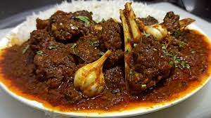

Bihari Mutton Curry

Description:
Mutton is tastier if we cook this in desi style and on
low flame. Slowly cooked mutton on "Mitti ka chulha"
is a bliss!! "Mitti ka chulha" is missing but
technique of slow cooking is there... so enjoy!!
have a look of my recipe.
Ingredients:
For Merination
- 1 kg mutton
- 1 cup whisked curd normal (not very sour)
- 2 tsp turmeric powder
- To taste salt
- 1 tsp sugar
- 2 tsp red chilli powder
- 1 Tsp mustard oil
For Curry
- 750 gm onion (Chopeed in big pieces)
- 8-10 whole red chillies
- 1 tsp black pepper powder
- 1 tsp turmeric powder
- 1 tsp cumin seeds
- 1 tsp coriander seeds
- 1 tsp coriander powder
- 1 tsp cumin powder
- 1/2 tsp black pepper powder
- 2 bay leaves
- 1 inch Cinnamon stick
- 2 Black cardamom
- 2 tsp grated ginger
- 2 tsp garlic paste
- 1 tsp garam masala powder
- 1 tbsp ghee
- As needed Mustard oil
Steps:
- Wash the mutton once with fresh water, drain the water and then keep it aside.
- Slightly roast the whole garam masala, Cinnamon, Cardamom. Cloves and mace and then grind them into powder.
- Chop the onions finely and keep aside.
- Take cumin seeds, black peppercorn, red chilies, ginger, garlic and about ½ cup of sliced onions and then grind them into a smooth paste.
- After these initial preparations, heat the oil in a pan. Once heated, add crushed bay leaves and remaining sliced onions. Turn the flame to medium and fry the onions, till they turn golden brown.
- Now add the mutton pieces and mix. Soon you will find them changing the colour. Keep sautéing for about 15 mintues, till the water released by mutton evaporates.
- Now add the grounded masala and Turmeric powder and mix. Saute the masala along with the mutton for another 10-15 mintues.
- Finally transfer the entire content in a pressure cooker. Add about 2 cups of water, salt and garam masala and mix.
- Cover the cooker with the lid and pressure cook the mutton upto 4 whistles on low flame. As the steam escapes, check if the mutton is tender. Serve hot with steamed rice and salad.